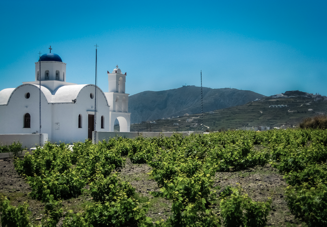

Salacious Stories
The Case of the Lost Key

One of my favorite places that I've ever been is Santorini, Greece. It's an idyllic, picturesque Greek island in the Aegean Sea where the houses are white stucco with blue rooves, like you were probably picturing when I said "Greece." I found out after visiting that it's actually where they filmed the Greek portion of the second Sisterhood of the Traveling Pants movie. So yeah, it's actually out of a movie.
I was there over my spring break in 2012, while I was studying abroad in Dijon, France, with my best friend, Mona, her friend Samantha, and her friend's roommate, Cara. Mona was spending that semester in Cork, Ireland, and Samantha and Cara were both in Athens.
We stayed in a beautiful hostel called Manos Villa, a short bus ride north of a town called Mesaria, where we had lovely dinners, bought tourist-y items (in my case: sunscreen), and rented two 4x4s for the four of us for the two days that we were there. If I remember correctly, it came to only 15 euro person total. Best life choice.
With the 4x4s, we were able to go everywhere on this little island. True, we accidentally held up traffic once or twice (or all the time), but people on Santorini were SO MUCH nicer about it than anyone in the Bay Area would have been. We made it to beaches all over the island, with red sand, white sand, black sand, no sand, Santorini had everything. My favorite was a black-sand beach with an Australian restaurant overlooking it and supplying it with many colorful cocktails.
The morning of the second day we had the 4x4s was a little chaotic because we were girls all moving at different paces. So, we kept handing off the room key to one another and almost losing it and finding it and almost losing it all over again. We finally set off in the late morning after having a wonderful breakfast of cereal and fruit.
We spent the second day much like the the first, beach-hopping, racing our 4x4s, and we ended it with a trip to a town called Oía ("Ee-uh") at the other end of the island, where we snapped plenty of photos of sunset of perfect little white houses with blue rooves, and then grabbed an Italian dinner. (Turns out you can have too many olives.)

We made it back to hostel entirely satisfied by the day and looking forward to plunking our heads down on our pillows and passing out. One problem: we no longer had the key. Somewhere in the morning chaos or in the shuffle between beaches, it was just gone. I worried that it was my fault, but I really could not remember whether or not I'd been the last one to have it. So, thoroughly embarrassed, we had to call the woman running the hostel, waking her up, and have her let us in to our room at midnight. She was, of course, disgruntled, and warned us that if we didn't find the key by the time we checked out the next morning that we'd have to reimburse her, 30 euros each, since she'd also have to change the locks.
We tore our room apart looking for that damn key, but the little bastard was nowhere to be found.
We shuffled up to the front desk the next morning, with all the confidence of a 6-year-old caught drawing on the walls: we knew our actions had consequences even if we’d had so much fun doing it. We all got out our wallets to pay her back, but before we could get out any bills, she let us off the hook.
"I know you’re all students," she told us, "so I don’t feel right charging you for the key. It is expensive, after all." We couldn't believe our luck, but it only got better. She gave us a complementary bottle of Greek wine from a vineyard down the road, a parting gift for her customers.
Every country treats its tourists differently. Parisians tend to stay aloof, Italians tend to flirt with everyone, and Greeks, from what I found, really want to make everyone happy, make sure everyone leaves with more than they came with. Such a lovely experience.